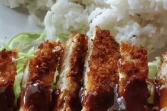

Tonkatsu

Tonkatsu is pork cutlet using a Japanese style breading.
Ingredients
- Pork
- Panko bread crumbs
- 1/2 cup of all-purpose flour
- 1 egg, beaten
- Vegetable oil
- Beat the egg
- Dip the pork in all-purpose flour
- Dip the pork in the egg
- Dip the pork in the panko crumbs
- Fry the pork in vegetable oil and make whatever sides you want